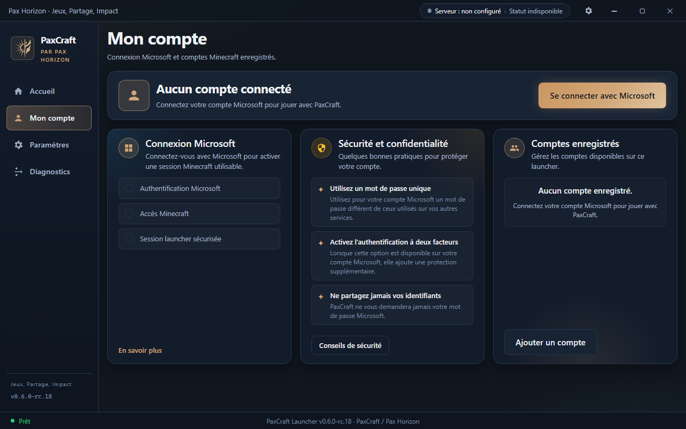
Compte déconnecté
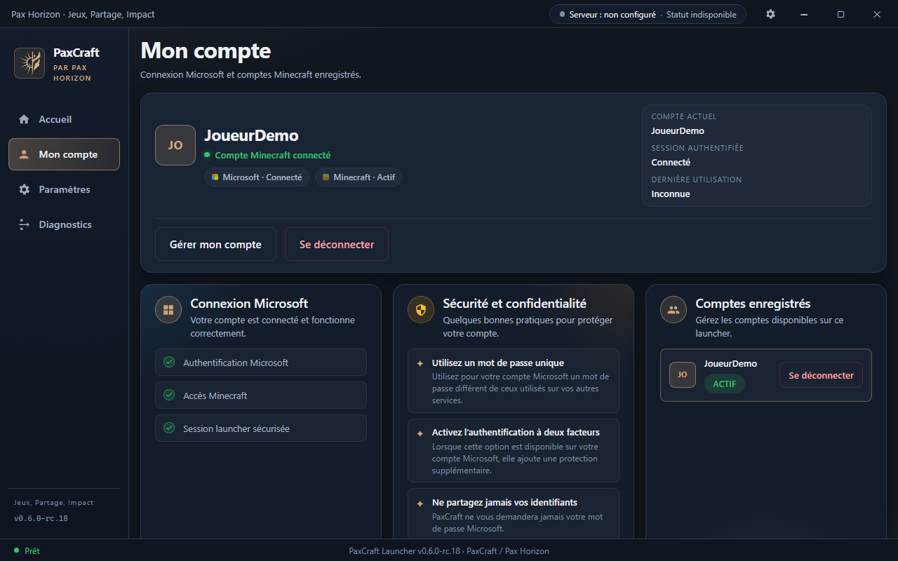
Compte connecté fictif (fixture AUTHENTICATED)
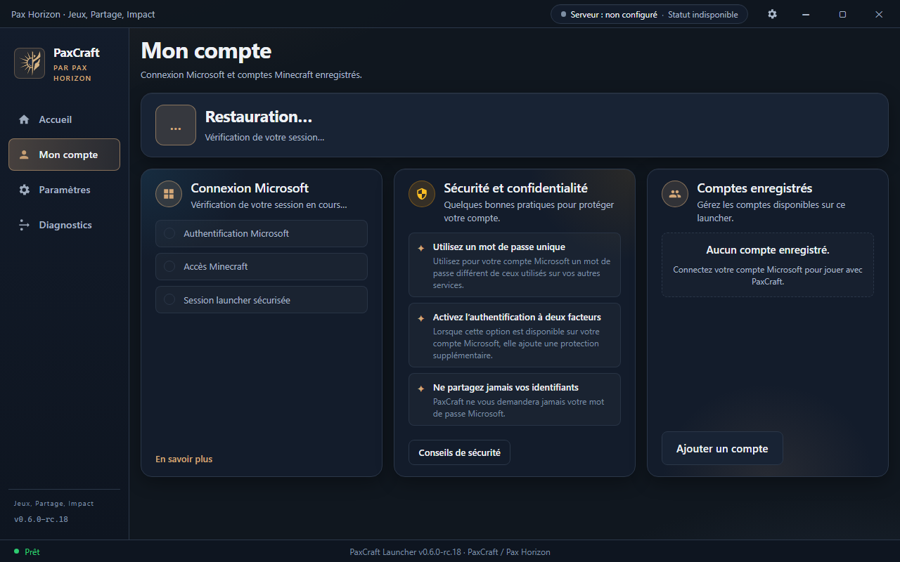
Compte chargement / restauration session
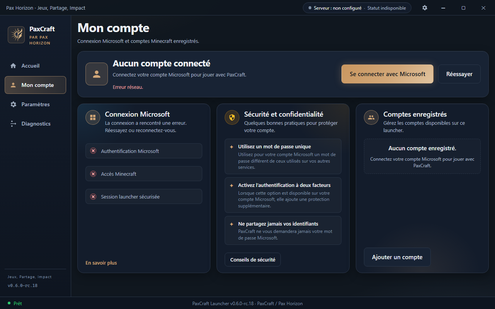
Compte erreur auth (fixture ERROR)
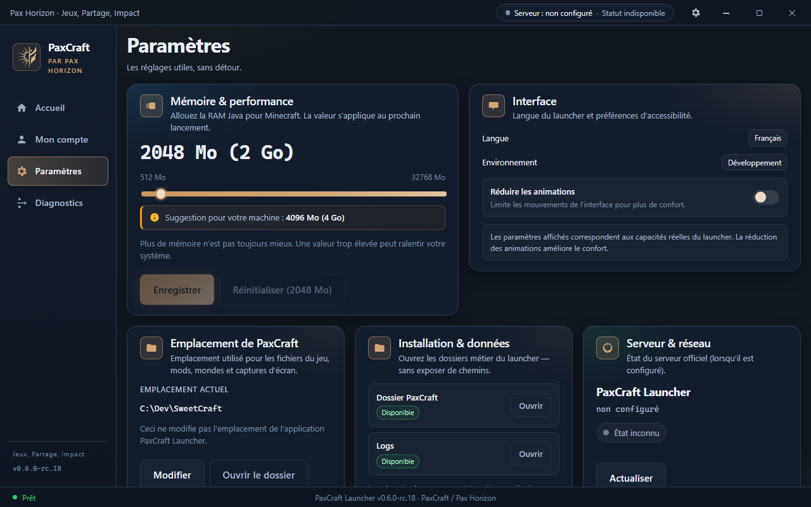
Paramètres — haut (mémoire / interface)
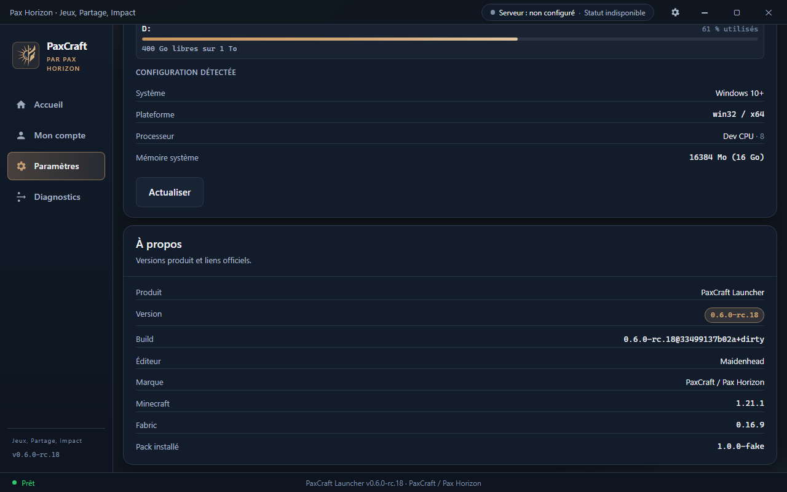
Paramètres — bas (système / à propos)
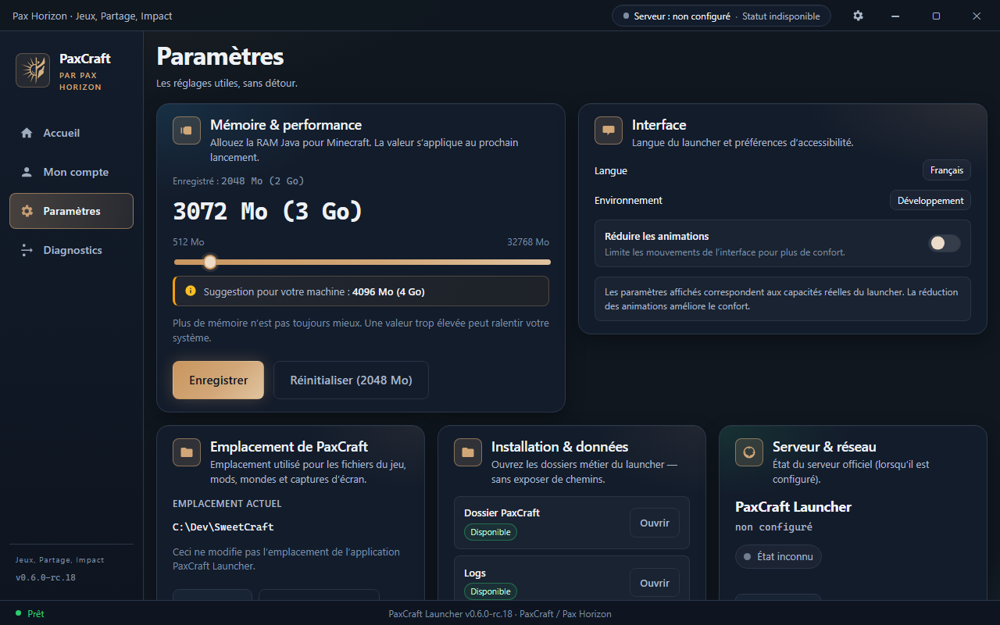
Mémoire modifiée avant enregistrement
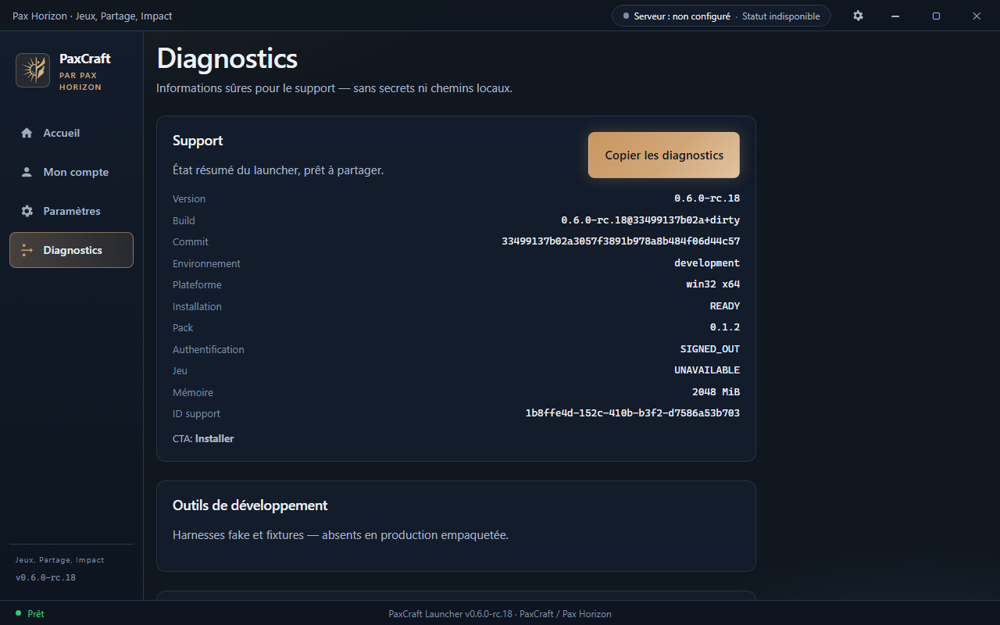
Diagnostics actuel — haut (référence, non refondu)
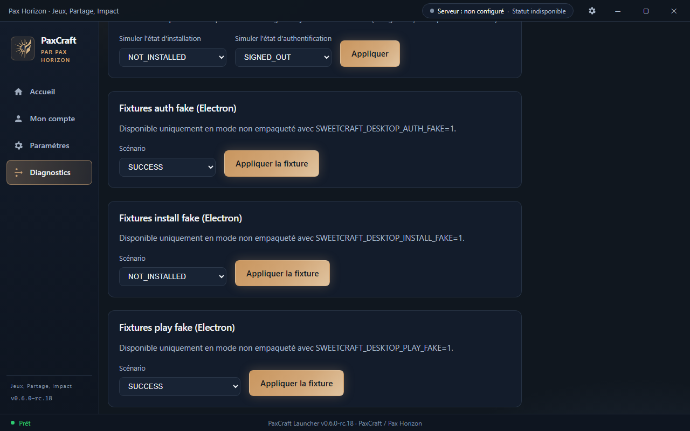
Diagnostics actuel — bas

Accueil READY — composants partagés
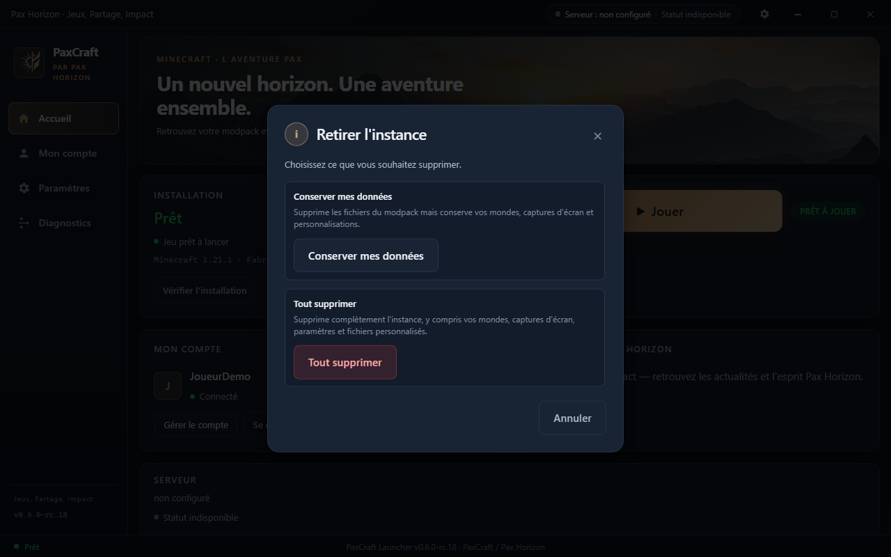
Modale retrait d’instance
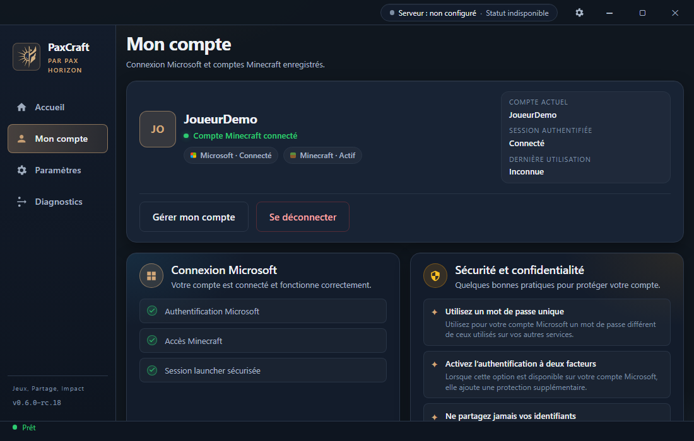
Compte connecté 1100×700
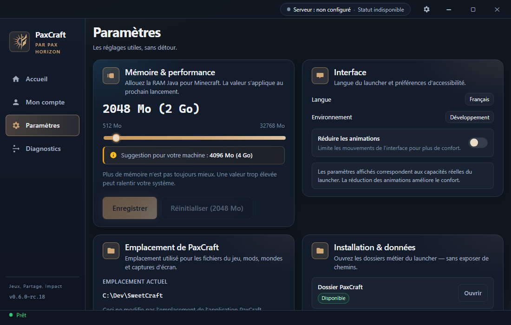
Paramètres 1100×700
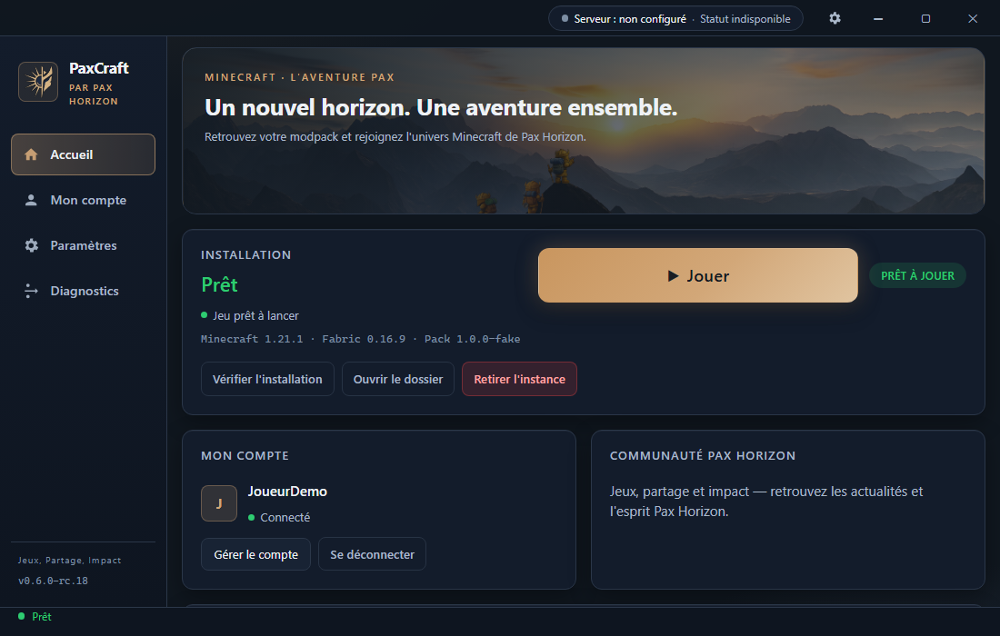
Accueil READY 1100×700